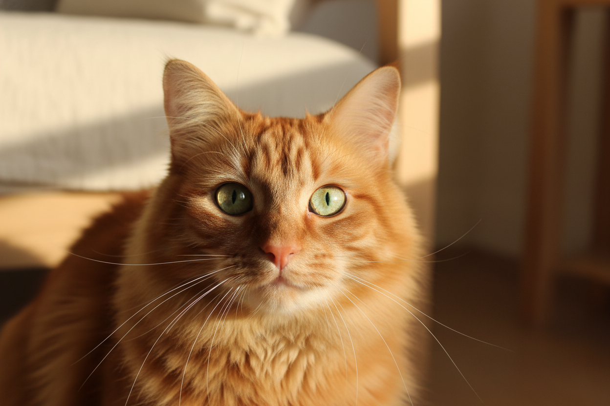

Compose · M&D
写给猫猫宇宙的一条新动态
默认服务猫猫日常、求助、健康和活动，doggie 家庭也能自然参与。保持标题清楚，图片可稍后关联媒体 ID。
pets cat-first
verified friendly
palette theme-ready

Compose · M&D
默认服务猫猫日常、求助、健康和活动，doggie 家庭也能自然参与。保持标题清楚，图片可稍后关联媒体 ID。
